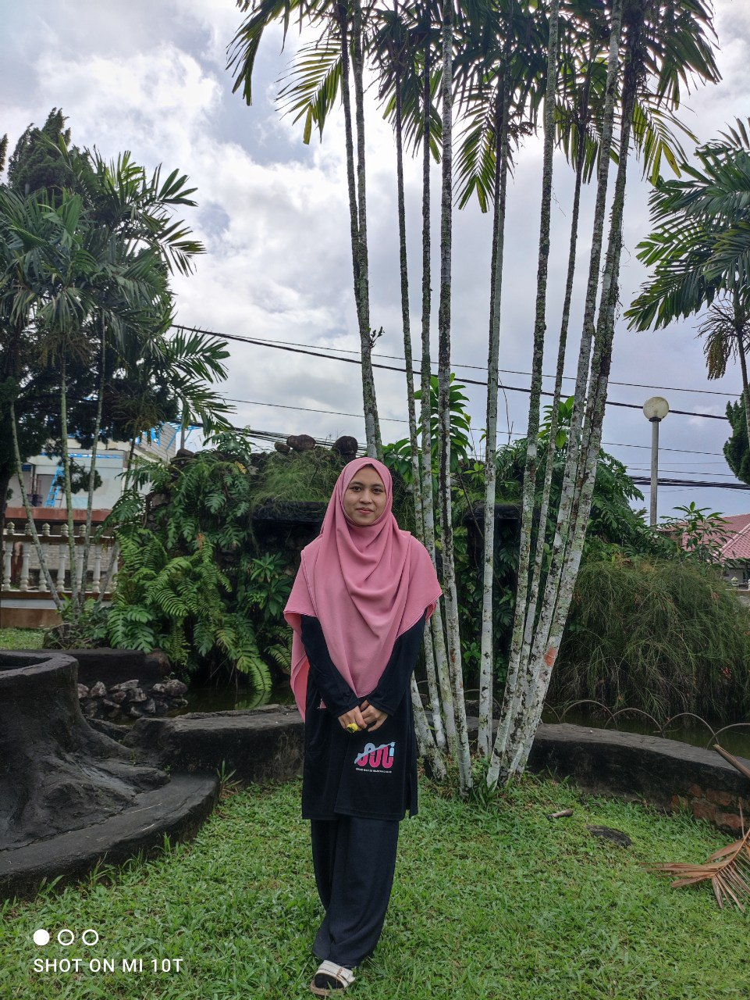
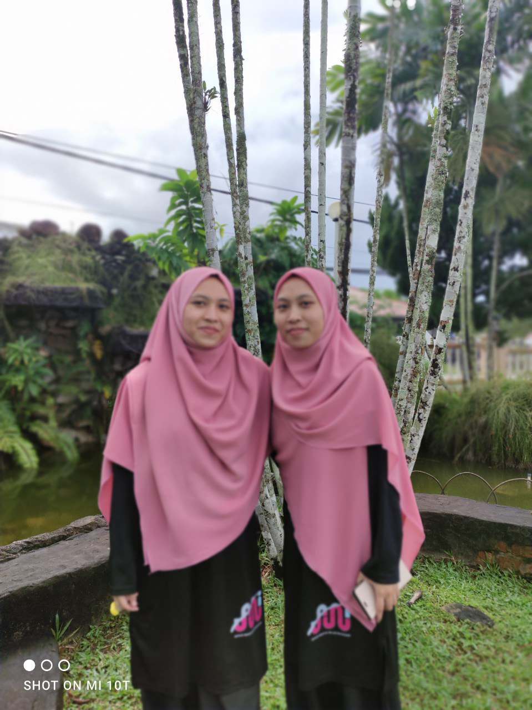

My name is Nur Suhaili bt Nordin and this year, i already turn to 25 years old. I am a Business Administration of Marketing student. Alhamdulillah now i am already in my second years of bachelor degree. Born on 4th August 1998 and pure kelantanese. In my family, i am the youngest one from 6 siblings and i have a twin sister, Nur Suhaila. I live with my mom, 2 brothers, sisters and nieces under one roof. My father has passed away 3 years ago. My favourite colour is a soft colours and for hobby, honestly i dont really have a specify hobby but if i have a free time, i usually spent it either by surfing the internet or reading. Specifically, i more prefer a motivation books and ballad songs. As for my character, i am an introvert and extrovert person based on the situation. If i'm with someone who are much older than me or those who i don't feel really comfortable, then i will talk less. But with those who are same age or younger than me,then i will be more talkative. In fact, i also love doing volunteer programs, for the few past year, i joined many NGOs and interacted a lot with people which actually increased my awareness especially towards the state or condition of the people around me. It is also improved my communication skill and leadership. I started being active in this social environment in 2020 until now.
Strive hard for every semesters to achieve the
best achievement in both studies and curriculum
and gain a dean for all semesters. Probably hard
but nothing is impossible since i believe that
I still able to do anything to achieve that goals
in this semester and next semesters in my degree's.
Microsoft Words (Good)
Microsoft Excels (Good)
Microsoft Powerpoint (Good)
Adobe Photoshop (Good)
Canva (Very Good)